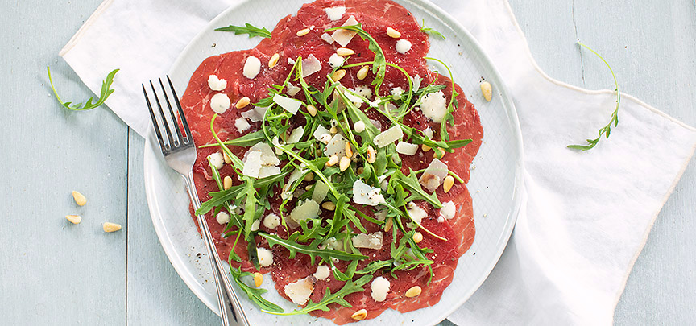

Carpaccio
Makkelijk en heerlijk klassiek Italiaans voorgerecht van carpaccio met Parmezaanse kaas, pijnboompitten, rucola en een heerlijke dressing
O 250 gr dun gesneden ossenhaas / carpaccio
O 4 eetlepels grof geraspte Parmezaanse kaas
O 4 eetlepels geroosterde pijnboompitten
O Handje rucola
O Peper en zout
O Truffelsaus of truffelmayonaise
Bereiding
Verdeel de carpaccio over 4 borden. Verdeel een beetje rucola er over en garneer met wat pijnboompitten en Parmezaanse kaas. Bestrooi met een snufje peper en zout en druppel er een beetje truffelsaus of mayo over.
Tip: je kunt ook zelf truffelmayo maken door een beetje mayonaise te mengen met truffelolie en eventueel een beetje water om aan te lengen.